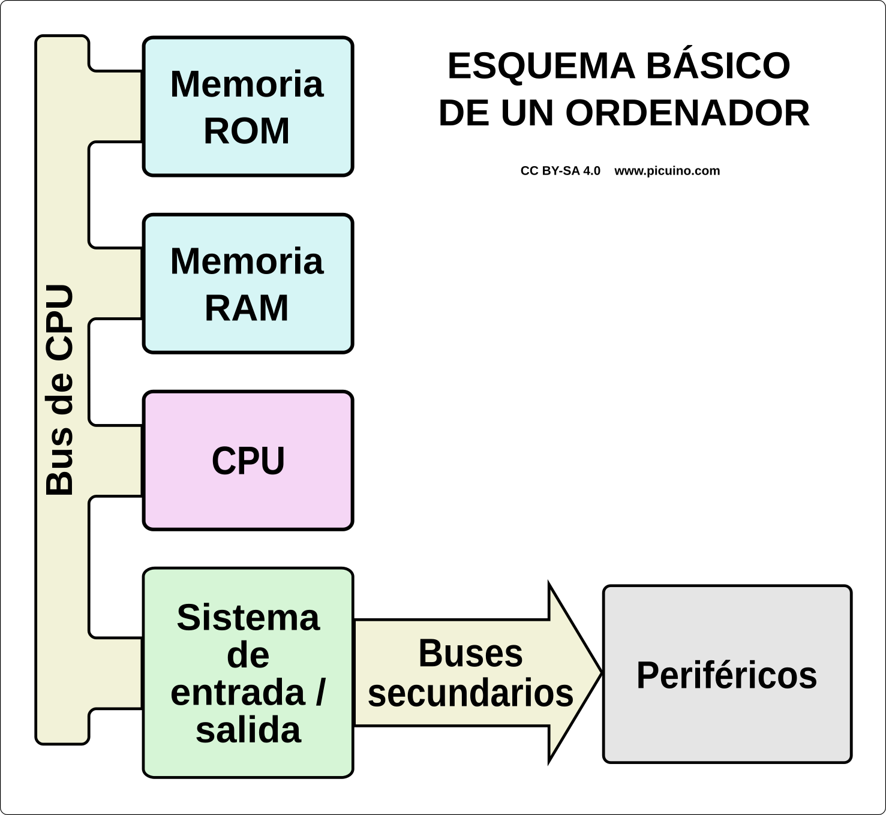
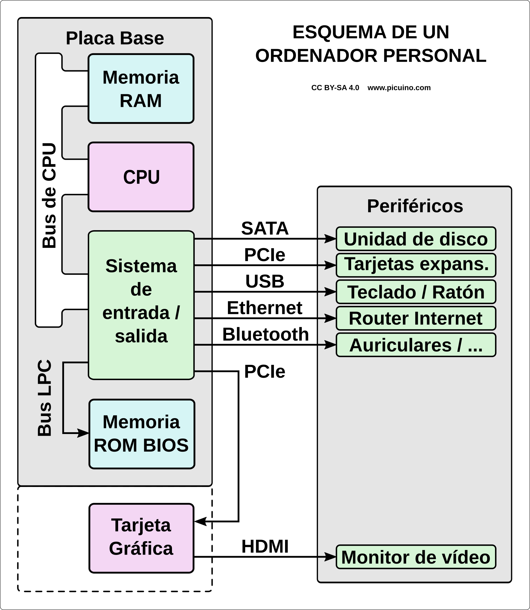

Hardware of a personal computer¶
{kind=link}
Gustavb, CC BY-SA 3.0 Unported, via Wikimedia Commons.¶
- Monitor.
- Motherboard.
- Microprocessor (CPU) and socket.
- RAM memory module and DIMM slots.
- Expansion cards and PCI slots.
- Power supply.
- Optical disc drive (CD, DVD, BD).
- Hard disk drive or solid state drive.
- Keyboard.
- Mouse.
General scheme of a computer¶
The following graphic shows the main elements of a computer.
{kind=link}
These elements are the following:
The ROM memory is responsible for long-term storage of programs and data, even if the computer is turned off.
The RAM memory, is in charge of storing the programs and the data so that the processor can work with them.
The CPU or central processing unit is the "brain" of the computer, the element that processes programs and data.
The CPU bus is responsible for transporting data between the CPU, memory and the input/output system.
The input/output system connects the computer to the outside and is responsible for transporting information between the CPU bus and various secondary connection buses, which are usually standard, such as USB, HDMI or Ethernet.
The peripherals are responsible for performing 3 fundamental tasks.
- Data input to the computer (for example, a keyboard)
- Computer data output (for example, a screen)
- External storage (for example, a USB stick)
The following figure represents the schematic of a personal computer.
{kind=link}
In this case the cheap, low-speed ROM is connected to the CPU via the low-speed LPC bus. When the computer boots up, the ROM information is transferred to the RAM, where the PC boot program is executed.